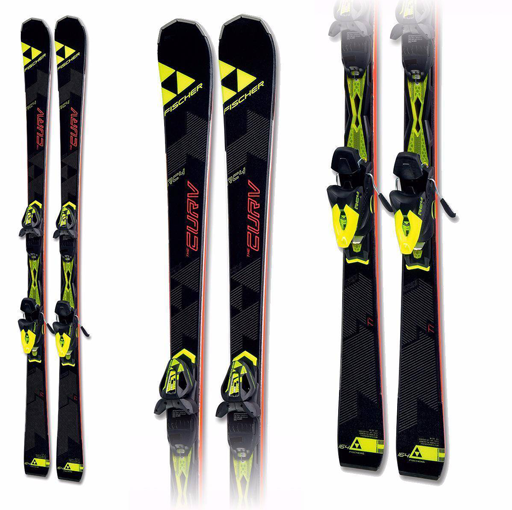

- Freeride — широкие или очень широкие лыжи для фрирайда (внетрассового катания).
- Racing — специализированные спортивные карвинговые лыжи, предназначенные для катания на подготовленных склонах. Разделяются на лыжи для слалома, слалома-гиганта, супер-гиганта, скоростного спуска, ски-кросса.
- All-mountain — универсальные карвинговые горные лыжи, предназначены для любительского катания.
-
Freestyle
— лыжи акробатических упражнений в специально подготовленных лыжных парках,
предполагают прыжки с трамплинов, акробатику в пайпе. - Aerials — лыжи для воздушной акробатики.
- Moguls — лыжи для могула.
-
Скиборды
— короткие карвинговые лыжи, длиной от 60 до 120 см,
применяются в том числе и для трюков. - Лыжи для скитура и скиальпинизма